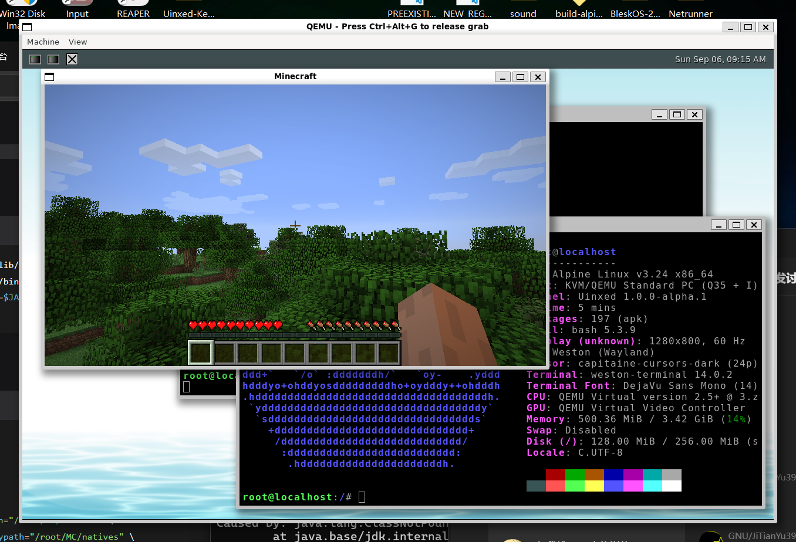

先理解，你想做什么。
Shell 将输入解析成命令与参数，再交给对应的处理模块。管道、重定向和后台作业，从这里开始。
src/shell/dispatch.py查看 Shell 模块 从 Python 中的进程调度，到 UEFI 上的自研内核。我们是一群学生，把对操作系统的好奇，写成能运行、能阅读、能继续探索的开源项目。
shell / applications从一条命令开始。Shell 解析输入，独立应用拥有自己的界面与逻辑。
以外部程序的执行路径为例，
沿着源码，走进系统内部。
Shell 将输入解析成命令与参数，再交给对应的处理模块。管道、重定向和后台作业，从这里开始。
src/shell/dispatch.py查看 Shell 模块 外部应用通过 fork / exec 运行。进程有自己的身份与生命周期，调度器用虚拟运行时间和截止期安排执行。
src/forkexec.py · src/process.py了解进程与调度 ELF 程序由 Unicorn 执行 x86_64 指令；系统调用转发到模拟层。你可以观察执行、修改实现，再运行一次。
Unicorn Engine → syscall探索 ELF 执行引擎 让系统原理，
成为可执行的代码。
维护中 v3.2.0 RC1 · MIT
一个可以运行，也可以逐行理解的模拟操作系统。
在 Python 中实现进程调度、内存映射、文件系统和引导流程。应用运行在真实子进程中，ELF 由 Unicorn 执行 x86 指令；改动源码后，你可以直接观察系统行为的变化。
从 UEFI 启动，
一直写到桌面。
抢先体验 x86_64 · Apache-2.0
在真实硬件上，让自己写的内核接管系统。
基于 Uinxed 自研 UNIX-like 内核，配一整套自研用户态。从窗口合成器到浏览器，一层一层实现。内核已在实体服务器上跑通，OpenJDK 与 DOOM 已能运行，图形与部分 ABI 仍在补齐。

工作室创立，从网上狗头 OS 项目起步的“MP4 架构”折腾，攒下第一批关注者。
开始读别人的代码，过程中和原作者认识，互相学习。
基于 ViudiraTech 的 VimdropOS 做出第一版 SpaceOS，开启新篇章。
深入研究 UEFI，基于 Uinxed-Kernel 研发正式的 SpaceOS。
UEFI 完全搞懂之后走全栈自研；随后把方向收回内核与桌面可用的 SpaceOS 8。